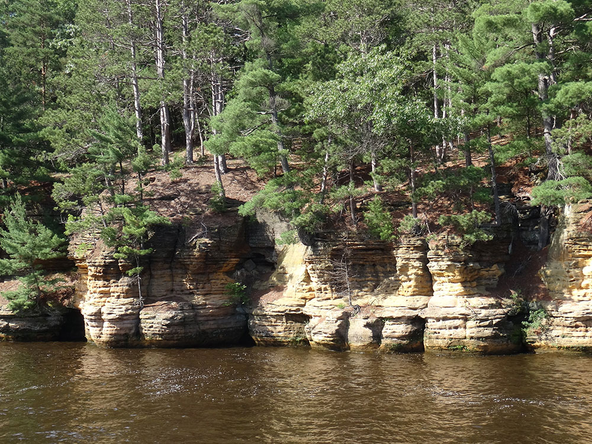
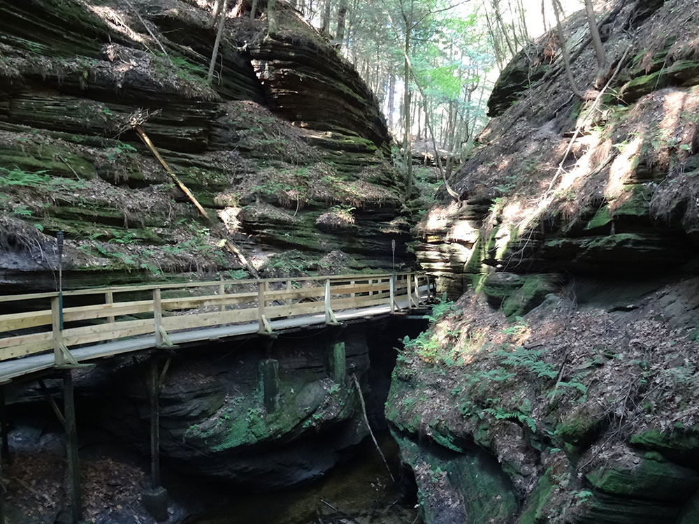
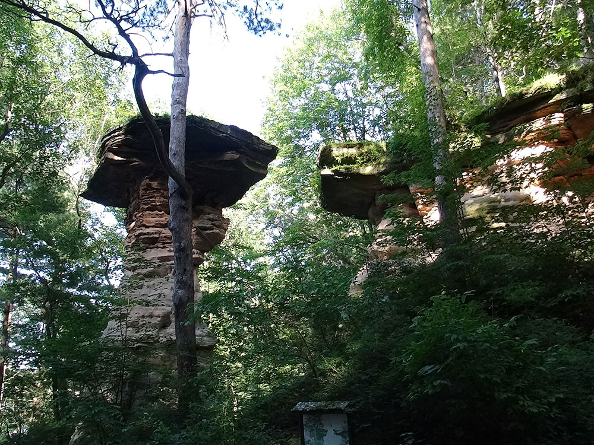
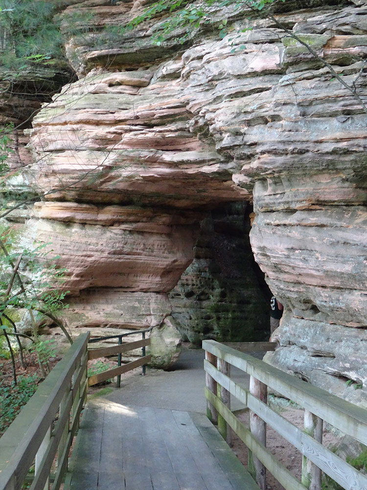
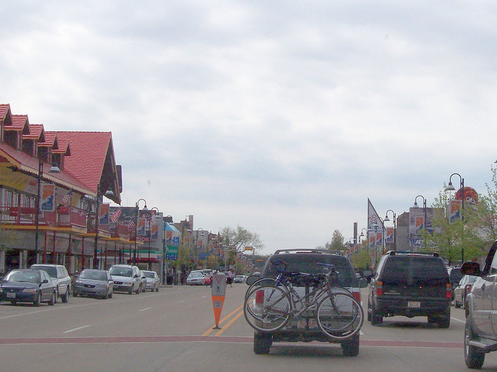

-400.jpg)
.jpg){kind=link}
5-mile gorge on the Wisconsin River in south-central Wisconsin, is noted for its scenic beauty, in particular for its unique Cambrian sandstone rock formations and tributary canyons
General Information
How to Get There
From La Quinta Inn & Suites by Wyndham Wisconsin Dells (approximately 3 mi): Take WI-13 south toward downtown Wisconsin Dells, continue to Broadway and the downtown riverfront district, then follow local signs to attractions, boat tours, shopping, restaurants, and visitor information services.
Overview
Wisconsin Dells is a resort city in south-central Wisconsin on the Wisconsin River that bills itself as the "Waterpark Capital of the World." It is known for its dozens of indoor and outdoor waterparks, its amusement parks, its Original Wisconsin Ducks amphibious tours, and the dramatic sandstone gorge of the Dells of the Wisconsin River, which gives the city its name. The Dells has been a tourist destination since the 1850s and is now one of the most visited family vacation spots in the Midwest.
Families come to Wisconsin Dells for the waterparks such as Noah's Ark, Kalahari, Great Wolf Lodge, and Chula Vista, and for boat and Duck tours through the Upper and Lower Dells, as well as for go-karts, mini golf, and theme parks such as Mt. Olympus. Outdoor enthusiasts come for nearby Devil's Lake State Park, Mirror Lake State Park, and the hiking and kayaking in the surrounding bluffs, and the city is about two hours from Chicago, Milwaukee, and Minneapolis.
History
The Ho-Chunk people lived along this part of the Wisconsin River for centuries, and the town was founded in 1856 as Kilbourn City, named after a railroad builder, and it was a farm and rail community. Photographer H. H. Bennett began taking and selling images of the sandstone formations in the 1860s, which popularized the Dells as a tourist destination, and he is credited with inventing the "stop-action" shutter. The town was renamed Wisconsin Dells in 1931, and the area grew in the twentieth century with boat tours, motels, and attractions such as the Tommy Bartlett water show, the Ducks (introduced in 1946), and the first waterparks in the 1970s and 1980s. The 1990s and 2000s brought indoor waterparks, which made the Dells a year-round destination.
Sightseeing and Popular Landmarks
The Dells of the Wisconsin River is a scenic gorge with sandstone cliffs, and it is best seen from a Dells Boat Tour or an Original Wisconsin Ducks tour, which include stops at Witches Gulch and Stand Rock. The Wisconsin Dells Parkway, also called "the Strip," is lined with attractions, and the H. H. Bennett Studio and History Center, a National Historic Landmark, tells the story of the town's first photographer. Other attractions include the Wisconsin Deer Park, and the Rick Wilcox Magic Theater, and nearby, the House on the Rock is a strange and popular museum in Spring Green.
Culture and Museums
The H. H. Bennett Studio and History Center has a collection of historic photographs and cameras, and the Ho-Chunk Gaming Wisconsin Dells and the Ho-Chunk Nation's cultural events reflect the region's Native American heritage. The Dells has many live shows, such as magic shows and dinner theaters, and the Wisconsin Dells Visitor Center has information about the history of the region. The Wisconsin Dells is also home to a number of art galleries and festivals, such as the Dells Fall Festival.
Parks
The area has outstanding natural scenery. Devil's Lake State Park, about 15 miles south, has 500-foot quartzite bluffs, a lake with a beach, and miles of hiking trails, and Mirror Lake State Park is a quiet lake with canoeing and camping. Rocky Arbor State Park and the Ice Age National Scenic Trail are good for hikers, and the Lower Dells has places to kayak and canoe. Witches Gulch, a narrow gorge, is accessible by boat tour or by a short hike.
Seasons and Weather
Wisconsin Dells has a humid continental climate with warm, humid summers and cold, snowy winters. Summer highs are in the 80s°F and winter highs are in the 20s and 30s°F, with about 45 inches of snow. Summer is the busiest season for outdoor waterparks and boat tours, while the indoor waterparks make winter and early spring popular for family getaways. Fall color in the bluffs is a quieter and less expensive time to visit.
The cliffs, some over 100 feet (30 m) high, and side canyons are closed to the public to protect sensitive ecological features. The viewing of the rock formations by water is a popular tourist attraction in the area. The nearby city of Wisconsin Dells is the center of summer tourist activity, much of it in the form of the theme parks unrelated to the river features.
The Dells of the Wisconsin River is owned by the Wisconsin Department of Natural Resources. It was established as a State Natural Area in 1994.
Things to Do
Experience the Waterpark Capital of the World
Wisconsin Dells is one of the Midwest's premier vacation destinations and is widely known as the "Waterpark Capital of the World." Located along the Wisconsin River in south-central Wisconsin, the city combines spectacular natural scenery, family attractions, outdoor recreation, entertainment venues, and some of the largest indoor and outdoor waterparks in the United States.
Explore the Famous Wisconsin Dells
The area's namesake attraction is the Wisconsin Dells, a scenic stretch of the Wisconsin River known for its sandstone cliffs, rock formations, narrow gorges, and unique geological features. Visitors can experience the Dells through boat tours, sightseeing cruises, kayaking, paddleboarding, and hiking trails that showcase the area's natural beauty.
Enjoy World-Class Waterparks
Wisconsin Dells is home to numerous indoor and outdoor waterparks, including Noah's Ark Waterpark, Kalahari Resort, Mt. Olympus Water & Theme Park, and Wilderness Resort. These attractions offer water slides, wave pools, lazy rivers, adventure rides, and year-round family entertainment.
Visit Family Attractions and Entertainment Venues
Beyond waterparks, visitors can enjoy amusement parks, zip lines, mini golf, go-karts, aquariums, wildlife parks, escape rooms, and live entertainment. Popular attractions include the Tommy Bartlett Exploratory, Timbavati Wildlife Park, and scenic railroad excursions.
Discover Outdoor Recreation
The Wisconsin Dells area offers hiking, camping, fishing, boating, golfing, rock climbing, wildlife viewing, and photography opportunities. Nearby state parks and natural areas provide access to some of Wisconsin's most scenic landscapes.
Top Trails
Witches Gulch Trail
Length: Approximately 1 mile round trip
Elevation Gain: Minimal
Difficulty: Easy
Accessible by select boat tours, Witches Gulch features elevated boardwalks through a narrow sandstone canyon with towering rock walls, lush vegetation, and unique geological formations. It is one of the most famous natural attractions in Wisconsin Dells.
Mirror Lake State Park Trails
Length: More than 19 miles of trails
Elevation Gain: Moderate
Difficulty: Easy to Moderate
Located just outside Wisconsin Dells, Mirror Lake State Park offers scenic hiking routes through forests, sandstone bluffs, and along the shores of Mirror Lake. The park is popular for hiking, mountain biking, wildlife viewing, and photography.
East Bluff Trail at Devil's Lake State Park
Length: Approximately 4 miles round trip
Elevation Gain: Moderate to Strenuous
Difficulty: Moderate
About 20 minutes from Wisconsin Dells, this iconic trail provides spectacular views from towering quartzite bluffs overlooking Devil's Lake. It is one of the most popular hiking destinations in Wisconsin.
Ice Age National Scenic Trail
Length: Variable distances available
Elevation Gain: Moderate
Difficulty: Easy to Moderate
Several segments of the Ice Age National Scenic Trail pass through the Wisconsin Dells region, allowing visitors to explore glacial landforms, forests, prairies, and scenic natural areas while learning about Wisconsin's geologic history.
Sources: Wisconsin Dells Visitor & Convention Bureau information regarding boat tours, waterparks, outdoor recreation, attractions, and visitor activities. https://www.wisdells.com
Additional information verified through Wisconsin Department of Natural Resources resources for Mirror Lake State Park, Devil's Lake State Park, Ice Age National Scenic Trail, and the Wisconsin River Dells natural area. https://dnr.wisconsin.gov
Wisconsin Dells is a city in south-central Wisconsin. The city takes its name from the Dells of the Wisconsin River, a scenic, glacius formed gorge that features striking sandstone formations along the banks of the Wisconsin River. Together with the nearby village of Lake Delton, the city forms an area known as "The Dells", a popular Midwestern tourist destination.
Because of the scenery provided by the dells of the Wisconsin River, Kilbourn City quickly became a popular travel destination in the Midwest. In 1856, Leroy Gates began taking tourists on boat tours of the Wisconsin Dells. These tours were given using wooden rowboats until 1873 when the first steamboat, the Modocawanda, was used. In 1875, early landscape photographer H. H. Bennett established a studio in the city and took many photos of the sandstone formations in the dells, including stereoscopic views. Prints of these photographs were distributed across the United States, further enhancing the status of Kilbourn City as a destination for sightseers. Taking advantage of this, Bennett began offering to take souvenir pictures of visitors to the dells, becoming one of the first to capitalize on the area's burgeoning tourist trade. Today, the H. H. Bennett Studio is an historic site operated by the Wisconsin Historical Society.
The Dells area has many indoor and outdoor waterparks, proclaiming itself the "Waterpark Capital of the World". Other attractions include boat tours, ziplining, golf courses, mini golf, go-kart tracks, water sports, horseback riding, museums, amusement parks, and a casino. Most attractions are located on the Strip, otherwise known as the Wisconsin Dells Parkway. Accommodations range from economical motels to RV parks to chain hotels to themed resorts featuring indoor and outdoor waterparks and other amenities.
The Big 5 Dells resorts with large indoor waterparks are the Mt. Olympus Water & Theme Park, Wilderness Territory, Kalahari Resort, Chula Vista Resort, and Great Wolf Lodge. Other smaller hotels with waterparks include the Atlantis Resort.
In 2005, Big Chief Karts and Coasters merged with the former Family Land Waterpark and Treasure Island Hotel to create a large theme park on the border of Lake Delton and Wisconsin Dells, with a resort called Hotel Rome, an indoor waterpark, outdoor waterpark, theme park, and the area's first indoor theme park. The park, which has roller coasters, go-karts, and water slides, is called Mt. Olympus Water & Theme Park.
This article uses material from Wikipedia as well as information from official tourism and institutional sources. Key references include Wisconsin Dells Visitor & Convention Bureau, H. H. Bennett Studio and History Center, Devil's Lake State Park, Mirror Lake State Park, Travel Wisconsin, and National Weather Service Milwaukee. Wikipedia material is from the article "Wisconsin Dells, Wisconsin", and is available under the Creative Commons Attribution-Share-Alike License 3.0.







